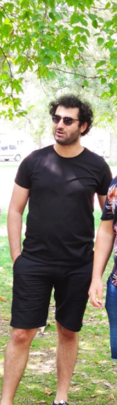

Celalettin Demir Diyet List
Diyetin Yasaklı Gıdaları:
Gluten, Şeker Türevleri ve Süt Ürünleri
-
Ekmek Çeşitleri,Açma,Poğaca vs Hamurişi dedeğimiz arkadaşları unutuyoruz
- Makarna, Kurabiye, Püskevit gibi un ile hazırlanan gıdalardan bir parça bile yemiyoruz
- Rafine şeker asla ve asla kullanmıyoruz
- Sütlü çikolata ve tüm tatlı çeşitleri kesinlikle yok
- Karbonhidrat tüketimini minimum seviyeye ulaştırıyoruz
- İşlenmiş etlerden uzak duruyoruz.(Sucuk,salam,Sosis)
- Meyveler ve asla meyve suları tüketmiyoruz
- Hiç bir şekilde süt ve süt ürününü koklamıyoruz bile
- Bildiğin üzere yoğurt, peynirde dahil :)
- Ayçiceği yağı veya çekirdekten mısır ile birlikte uzak duruyoruz
Diyetin Faydaları Gıdaları: Sağlıklı Yağlar&Probiyotikler
- Güne başlarken; Haşlanmış Yumurta, Sınırsız Zeytin, Bolca Salatalık, Maydanoz
- Ara öğün olarak; Sınırsız Badem, Fındık, Ceviz, Fıstık
- Öğle yemekleri; Karabuğday Patlağı, Kök sebzeler, Salata,
En iyi ihtimal Koyu Yeşil Yapraklı Sebzeler(Ispanak,Roka,Tere,Pazı vb.)
- Akşam yemeğine kadar; Karabuğday patlağı
- Akşam yemekleri; Sebze yemeği, tereyağsız pilav, turşu, karabuğday ve kinoa, lahanagiller,
bakliyat, enginar, kereviz, mantar, yeşil kabak, havuç, az patates,
brokoli, karnıbahar, deniz börülcesi, semizotu, bezelye gibi gibi..
- Baharatımsılar; Zencefil, zerdeçal, hindistan cevizi, sarımsak, soğan, reyhan, limon, biberiye
- İçecekler; Bolca SU, Yeşil Çay, KOMBUCHA, maydanoz kürü isteğe bağlı
- Bitki çayların; Ananaslı Yeşil Çay, Limonlu Yeşil Çay, Rezene, Biberiye, Hibiskus
Günlük Su Tüketim Formülü:
